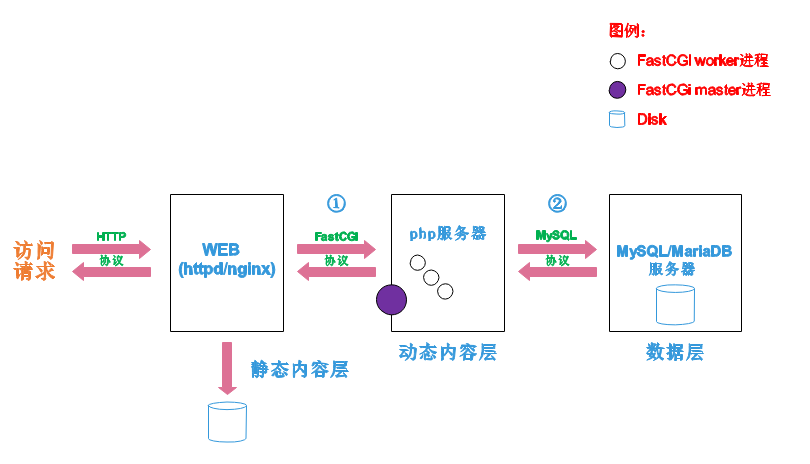

lamp

文章目录
1. lamp简介
有了前面学习的知识的铺垫，今天可以来学习下第一个常用的web架构了。
所谓lamp，其实就是由Linux+Apache+Mysql/MariaDB+Php/Perl/Python的一组动态网站或者服务器的开源软件，除Linux外其它各部件本身都是各自独立的程序，但是因为经常被放在一起使用，拥有了越来越高的兼容度，共同组成了一个强大的Web应用程序平台。
LAMP指的是Linux（操作系统）、Apache（HTTP服务器）、MySQL（也指MariaDB，数据库软件）和PHP（有时也是指Perl或Python）的第一个字母，一般用来建立web应用平台。
2. web服务器工作流程
在说lamp架构平台的搭建前，我们先来了解下什么是CGI，什么是FastCGI，什么是......
web服务器的资源分为两种，静态资源和动态资源
- 静态资源就是指静态内容，客户端从服务器获得的资源的表现形式与原文件相同。可以简单的理解为就是直接存储于文件系统中的资源
- 动态资源则通常是程序文件，需要在服务器执行之后，将执行的结果返回给客户端
那么web服务器如何执行程序并将结果返回给客户端呢？下面通过一张图来说明一下web服务器如何处理客户端的请求

如上图所示
阶段①显示的是httpd服务器（即apache）和php服务器通过FastCGI协议进行通信，且php作为独立的服务进程运行
阶段②显示的是php程序和mysql数据库间通过mysql协议进行通信。php与mysql本没有什么联系，但是由Php语言写成的程序可以与mysql进行数据交互。同理perl和python写的程序也可以与mysql数据库进行交互
2.1 cgi与fastcgi
上图阶段①中提到了FastCGI，下面我们来了解下CGI与FastCGI。
CGI（Common Gateway Interface，通用网关接口），CGI是外部应用程序（CGI程序）与WEB服务器之间的接口标准，是在CGI程序和Web服务器之间传递信息的过程。CGI规范允许Web服务器执行外部程序，并将它们的输出发送给Web浏览器，CGI将web的一组简单的静态超媒体文档变成一个完整的新的交互式媒体。
FastCGI（Fast Common Gateway Interface）是CGI的改良版，CGI是通过启用一个解释器进程来处理每个请求，耗时且耗资源，而FastCGI则是通过master-worker形式来处理每个请求，即启动一个master主进程，然后根据配置启动几个worker进程，当请求进来时，master会从worker进程中选择一个去处理请求，这样就避免了重复的生成和杀死进程带来的频繁cpu上下文切换而导致耗时
2.2 httpd与php结合的方式
httpd与php结合的方式有以下三种：
- modules：php将以httpd的扩展模块形式存在，需要加载动态资源时，httpd可以直接通过php模块来加工资源并返回给客户端
- httpd prefork：libphp5.so（多进程模型的php）
- httpd event or worker：libphp5-zts.so（线程模型的php）
- CGI：httpd需要加载动态资源时，通过CGI与php解释器联系，获得php执行的结果，此时httpd负责与php连接的建立和断开等
- FastCGI：利用php-fpm机制，启动为服务进程，php自行运行为一个服务，https通过socket与php通信
较于CGI方式，FastCGI更为常用，很少有人使用CGI方式来加载动态资源
2.3 web工作流程
通过上面的图说明一下web的工作流程：
- 客户端通过http协议请求web服务器资源
- web服务器收到请求后判断客户端请求的资源是静态资源或是动态资源
- 若是静态资源则直接从本地文件系统取之返回给客户端。
- 否则若为动态资源则通过FastCGI协议与php服务器联系，通过CGI程序的master进程调度worker进程来执行程序以获得客户端请求的动态资源，并将执行的结果通过FastCGI协议返回给httpd服务器，httpd服务器收到php的执行结果后将其封装为http响应报文响应给客户端。在执行程序获取动态资源时若需要获得数据库中的资源时，由Php服务器通过mysql协议与MySQL/MariaDB服务器交互，取之而后返回给httpd，httpd将从php服务器收到的执行结果封装成http响应报文响应给客户端。
3. lamp平台构建
环境说明：
| 系统平台 | IP | 需要安装的服务 |
|---|---|---|
| centos7 redhat7 |
192.168.161.130 | httpd-2.4 mysql-5.7 php php-mysql |
lamp平台软件安装次序：
1
|
httpd --> mysql --> php |
注意：php要求httpd使用prefork MPM
3.1 安装httpd
1 2 3 4 5 6 7 8 9 10 11 12 13 14 15 16 17 18 19 20 21 22 23 24 25 26 27 28 29 30 31 32 33 34 35 36 37 38 39 40 41 42 43 44 45 46 47 48 49 50 51 52 53 54 55 56 57 58 59 60 61 62 63 64 65 66 67 68 69 70 71 72 73 |
安装开发工具包
[root@localhost ~]# yum groups mark install 'Development Tools'
创建apache服务的用户和组
[root@localhost ~]# groupadd -r apache
[root@localhost ~]# useradd -r -M -s /sbin/nologin -g apache apache
安装依赖包
[root@localhost ~]# yum -y install openssl-devel pcre-devel expat-devel libtool
下载和安装apr以及apr-util
[root@localhost ~]# cd /usr/src/
[root@localhost src]# wget http://mirrors.shu.edu.cn/apache//apr/apr-1.6.5.tar.bz2
[root@localhost src]# wget http://mirrors.shu.edu.cn/apache//apr/apr-util-1.6.1.tar.bz2
[root@localhost src]# ls
apr-1.6.5.tar.bz2 apr-util-1.6.1.tar.bz2 debug kernels
[root@localhost src]# tar xf apr-1.6.5.tar.bz2
[root@localhost src]# tar xf apr-util-1.6.1.tar.bz2
[root@localhost src]# ls
apr-1.6.5 apr-1.6.5.tar.bz2 apr-util-1.6.1 apr-util-1.6.1.tar.bz2 debug kernels
[root@localhost src]# cd apr-1.6.5
[root@localhost apr-1.6.5]# vim configure
cfgfile="${ofile}T"
trap "$RM \"$cfgfile\"; exit 1" 1 2 15
# $RM "$cfgfile" //将此行加上注释，或者删除此行
[root@localhost apr-1.6.5]# ./configure --prefix=/usr/local/apr
[root@localhost apr-1.6.5]# make && make install
[root@localhost apr-1.6.5]# cd /usr/src/apr-util-1.6.1
[root@localhost apr-util-1.6.1]# ./configure --prefix=/usr/local/apr-util --with-apr=/usr/local/apr
[root@localhost apr-util-1.6.1]# make && make install
编译安装httpd
[root@localhost ~]# wget http://mirror.bit.edu.cn/apache//httpd/httpd-2.4.37.tar.bz2
[root@localhost ~]# ls
httpd-2.4.37.tar.bz2
[root@localhost ~]# tar xf httpd-2.4.37.tar.bz2
[root@localhost ~]# cd httpd-2.4.37
[root@localhost httpd-2.4.37]# ./configure --prefix=/usr/local/apache \
--sysconfdir=/etc/httpd24 \
--enable-so \
--enable-ssl \
--enable-cgi \
--enable-rewrite \
--with-zlib \
--with-pcre \
--with-apr=/usr/local/apr \
--with-apr-util=/usr/local/apr-util/ \
--enable-modules=most \
--enable-mpms-shared=all \
--with-mpm=prefork
[root@localhost httpd-2.4.37]# make && make install
安装后配置
[root@localhost ~]# echo 'export PATH=/usr/local/apache/bin:$PATH' > /etc/profile.d/httpd.sh
[root@localhost ~]# source /etc/profile.d/httpd.sh
[root@localhost ~]# ln -s /usr/local/apache/include/ /usr/include/httpd
[root@localhost ~]# echo 'MANPATH /usr/local/apache/man' >> /etc/man.config
取消ServerName前面的注释
[root@localhost ~]# sed -i '/#ServerName/s/#//g' /etc/httpd24/httpd.conf
启动apache
[root@localhost ~]# apachectl start
[root@localhost ~]# ss -antl
State Recv-Q Send-Q Local Address:Port Peer Address:Port
LISTEN 0 128 *:22 *:*
LISTEN 0 100 127.0.0.1:25 *:*
LISTEN 0 128 :::80 :::*
LISTEN 0 128 :::22 :::*
LISTEN 0 100 ::1:25 :::* |
3.2 安装mysql
1 2 3 4 5 6 7 8 9 10 11 12 13 14 15 16 17 18 19 20 21 22 23 24 25 26 27 28 29 30 31 32 33 34 35 36 37 38 39 40 41 42 43 44 45 46 47 48 49 50 51 52 53 54 55 56 57 58 59 60 61 62 63 64 65 66 67 68 69 70 71 72 73 74 75 76 77 78 79 80 81 82 83 84 85 86 87 88 89 90 91 92 93 94 95 96 97 98 99 100 101 102 103 104 105 106 107 108 109 110 111 112 113 114 115 116 117 118 119 120 121 122 123 124 125 126 127 128 129 130 131 132 133 134 135 136 137 138 139 140 141 142 143 144 145 146 147 148 149 150 151 152 153 154 155 156 157 158 159 160 161 162 163 164 165 166 |
安装依赖包
[root@localhost ~]# yum -y install ncurses-devel openssl-devel openssl cmake mariadb-devel
创建用户和组
[root@localhost src]# groupadd -r -g 306 mysql
[root@localhost src]# useradd -M -s /sbin/nologin -g 306 -u 306 mysql
下载二进制格式的mysql软件包
[root@localhost ~]# cd /usr/src/
[root@localhost src]# wget https://downloads.mysql.com/archives/get/file/mysql-5.7.22-linux-glibc2.12-x86_64.tar.gz
--2018-08-13 23:56:27-- https://downloads.mysql.com/archives/get/file/mysql-5.7.22-linux-glibc2.12-x86_64.tar.gz
Resolving downloads.mysql.com (downloads.mysql.com)... 137.254.60.14
Connecting to downloads.mysql.com (downloads.mysql.com)|137.254.60.14|:443... connected.
HTTP request sent, awaiting response... 302 Found
Location: https://cdn.mysql.com/archives/mysql-5.7/mysql-5.7.22-linux-glibc2.12-x86_64.tar.gz [following]
......
Saving to: ‘mysql-5.7.22-linux-glibc2.12-x86_64.tar.gz’
100%[=====================================>] 643,790,848 2.46MB/s in 4m 20s
2018-08-14 00:00:50 (2.36 MB/s) - ‘mysql-5.7.22-linux-glibc2.12-x86_64.tar.gz’saved [643790848/643790848]
解压软件至/usr/local/
[root@localhost src]# ls
debug kernels mysql-5.7.22-linux-glibc2.12-x86_64.tar.gz
[root@localhost src]# tar xf mysql-5.7.22-linux-glibc2.12-x86_64.tar.gz -C /usr/local/
[root@localhost ~]# ls /usr/local/
bin games lib libexec sbin src
etc include lib64 mysql-5.7.22-linux-glibc2.12-x86_64 share
[root@localhost ~]# cd /usr/local/
[root@localhost local]# ln -sv mysql-5.7.22-linux-glibc2.12-x86_64/ mysql
‘mysql’ -> ‘mysql-5.7.22-linux-glibc2.12-x86_64/’
[root@localhost local]# ll
total 0
drwxr-xr-x. 2 root root 6 Mar 10 2016 bin
drwxr-xr-x. 2 root root 6 Mar 10 2016 etc
drwxr-xr-x. 2 root root 6 Mar 10 2016 games
drwxr-xr-x. 2 root root 6 Mar 10 2016 include
drwxr-xr-x. 2 root root 6 Mar 10 2016 lib
drwxr-xr-x. 2 root root 6 Mar 10 2016 lib64
drwxr-xr-x. 2 root root 6 Mar 10 2016 libexec
lrwxrwxrwx 1 root root 36 Aug 14 16:00 mysql -> mysql-5.7.22-linux-glibc2.12-x86_64/
drwxr-xr-x 9 root root 129 Aug 14 00:16 mysql-5.7.22-linux-glibc2.12-x86_64
drwxr-xr-x. 2 root root 6 Mar 10 2016 sbin
drwxr-xr-x. 5 root root 49 Jun 13 19:03 share
drwxr-xr-x. 2 root root 6 Mar 10 2016 src
修改目录/usr/local/mysql的属主属组
[root@localhost ~]# chown -R mysql.mysql /usr/local/mysql
[root@localhost ~]# ll /usr/local/mysql -d
lrwxrwxrwx 1 mysql mysql 36 Aug 14 16:00 /usr/local/mysql -> mysql-5.7.22-linux-glibc2.12-x86_64/
添加环境变量
[root@localhost ~]# ls /usr/local/mysql
bin COPYING docs include lib man README share support-files
[root@localhost ~]# echo 'export PATH=/usr/local/mysql/bin:$PATH' > /etc/profile.d/mysql.sh
[root@localhost ~]# . /etc/profile.d/mysql.sh
[root@localhost ~]# echo $PATH
/usr/local/mysql/bin:/usr/local/sbin:/usr/local/bin:/usr/sbin:/usr/bin:/root/bin
建立数据存放目录
[root@localhost mysql]# mkdir /opt/data
[root@localhost mysql]# chown -R mysql.mysql /opt/data/
[root@localhost mysql]# ll /opt/
total 0
drwxr-xr-x 2 mysql mysql 6 Aug 14 16:54 data
初始化数据库
[root@localhost ~]# /usr/local/mysql/bin/mysqld --initialize --user=mysql --datadir=/opt/data/
.......
temporary password is generatedfor root@localhost: adjceSV12=Sa
请注意，这个命令的最后会生成一个临时密码，此处密码是adjceSV12=Sa
配置mysql
[root@localhost ~]# ln -sv /usr/local/mysql/include/ /usr/local/include/mysql
‘/usr/local/include/mysql’ -> ‘/usr/local/mysql/include/’
[root@localhost ~]# echo '/usr/local/mysql/lib' > /etc/ld.so.conf.d/mysql.conf
[root@localhost ~]# ldconfig -v
ldconfig: Can't stat /libx32: No such file or directory
ldconfig: Path `/usr/lib' given more than once
ldconfig: Path `/usr/lib64' given more than once
ldconfig: Can't stat /usr/libx32: No such file or directory
/usr/lib64/mysql:
libmysqlclient.so.18 -> libmysqlclient_r.so
/usr/local/mysql/lib:
libmysqlclient.so.20 -> libmysqlclient.so.20.3.9
......
/lib/sse2: (hwcap: 0x0000000004000000)
/lib64/sse2: (hwcap: 0x0000000004000000)
/lib64/tls: (hwcap: 0x8000000000000000)
[root@localhost ~]# ldconfig -p |grep mysql
libmysqlclient.so.20 (libc6,x86-64) => /usr/local/mysql/lib/libmysqlclient.so.20
libmysqlclient.so.18 (libc6,x86-64) => /usr/lib64/mysql/libmysqlclient.so.18
libmysqlclient.so (libc6,x86-64) => /usr/lib64/mysql/libmysqlclient.so
libmysqlclient.so (libc6,x86-64) => /usr/local/mysql/lib/libmysqlclient.so
生成配置文件
[root@localhost ~]# cat > /etc/my.cnf <<EOF
[mysqld]
basedir = /usr/local/mysql
datadir = /opt/data
socket = /tmp/mysql.sock
port = 3306
pid-file = /opt/data/mysql.pid
user = mysql
skip-name-resolve
EOF
配置服务启动脚本
[root@localhost ~]# cp -a /usr/local/mysql/support-files/mysql.server /etc/init.d/mysqld
[root@localhost ~]# sed -ri 's#^(basedir=).*#\1/usr/local/mysql#g' /etc/init.d/mysqld
[root@localhost ~]# sed -ri 's#^(datadir=).*#\1/opt/data#g' /etc/init.d/mysqld
启动mysql
[root@localhost ~]# service mysqld start
Starting MySQL.. SUCCESS!
[root@localhost ~]# ps -ef|grep mysql
root 1521 1 0 01:58 pts/0 00:00:00 /bin/sh /usr/local/mysql/binmysqld_safe --datadir=/opt/data --pid-file=/opt/data/mysql.pid
mysql 1699 1521 0 01:58 pts/0 00:00:00 /usr/local/mysql/bin/mysqld --basedir=/usr/local/mysql --datadir=/opt/data --plugin-dir=/usr/local/mysql/lib/plugin --user=mysql --log-error=localhost.localdomain.err --pid-file=/opt/data/mysql.pid --socket=/tmp/mysql.sock --port=3306
root 1734 1301 0 01:59 pts/0 00:00:00 grep --color=auto mysql
[root@localhost ~]# ss -antl
State Recv-Q Send-Q Local Address:Port Peer Address:Port
LISTEN 0 128 *:22 *:*
LISTEN 0 100 127.0.0.1:25 *:*
LISTEN 0 128 :::22 :::*
LISTEN 0 100 ::1:25 :::*
LISTEN 0 80 :::3306 :::*
修改密码
使用临时密码登录
[root@localhost ~]# mysql -uroot -p
Enter password:
Welcome to the MySQL monitor. Commands end with ; or \g.
Your MySQL connection id is 2
Server version: 5.7.22
Copyright (c) 2000, 2018, Oracle and/or its affiliates. All rights reserved.
Oracle is a registered trademark of Oracle Corporation and/or its
affiliates. Other names may be trademarks of their respective
owners.
Type 'help;' or '\h' for help. Type '\c' to clear the current input statement.
mysql>
设置新密码
mysql> set password = password('itwhs123[');
Query OK, 0 rows affected, 1 warning (0.00 sec)
mysql> quit
Bye |
3.3 安装php
1 2 3 4 5 6 7 8 9 10 11 12 13 14 15 16 17 18 19 20 21 22 23 24 25 26 27 28 29 30 31 32 33 34 35 36 37 38 39 40 41 42 43 44 45 46 47 48 49 50 51 52 53 54 55 56 57 58 59 60 61 62 63 64 65 66 67 68 69 70 71 72 73 74 75 76 77 78 79 80 81 82 83 84 85 86 87 88 89 90 91 92 93 94 95 96 97 98 99 100 101 102 103 104 105 106 107 108 109 110 111 112 113 114 115 116 117 118 119 120 121 122 123 124 125 126 127 128 |
配置yum源 [root@localhost ~]# cd /etc/yum.repos.d/ [root@localhost yum.repos.d]# wget http://mirrors.163.com/.help/CentOS7-Base-163.repo [root@localhost ~]# sed -i 's/\$releasever/7/g' /etc/yum.repos.d/CentOS7-Base-163.repo [root@localhost ~]# sed -i 's/^enabled=.*/enabled=1/g' /etc/yum.repos.d/CentOS7-Base-163.repo [root@localhost ~]# yum -y install epel-release [root@localhost ~]# rpm -Uvh https://mirror.webtatic.com/yum/el7/webtatic-release.rpm 安装依赖包 [root@localhost ~]# yum -y install libxml2 libxml2-devel openssl openssl-devel bzip2 bzip2-devel libcurl libcurl-devel libicu-devel libjpeg libjpeg-devel libpng libpng-devel openldap-devel libpcre-devel freetype freetype-devel gmp gmp-devel libmcrypt libmcrypt-devel readline readline-devel libxslt libxslt-devel mhash mhash-devel php72w-mysqlnd 下载php [root@localhost ~]# cd /usr/src/ [root@localhost src]# wget http://cn.php.net/distributions/php-7.2.8.tar.xz 编译安装php [root@localhost src]# tar xf php-7.2.8.tar.xz [root@localhost src]# cd php-7.2.8 [root@localhost php-7.2.8]# ./configure --prefix=/usr/local/php7 \ --with-config-file-path=/etc \ --enable-fpm \ --enable-inline-optimization \ --disable-debug \ --disable-rpath \ --enable-shared \ --enable-soap \ --with-openssl \ --enable-bcmath \ --with-iconv \ --with-bz2 \ --enable-calendar \ --with-curl \ --enable-exif \ --enable-ftp \ --with-gd \ --with-jpeg-dir \ --with-png-dir \ --with-zlib-dir \ --with-freetype-dir \ --with-gettext \ --enable-json \ --enable-mbstring \ --enable-pdo \ --with-mysqli=mysqlnd \ --with-pdo-mysql=mysqlnd \ --with-readline \ --enable-shmop \ --enable-simplexml \ --enable-sockets \ --enable-zip \ --enable-mysqlnd-compression-support \ --with-pear \ --enable-pcntl \ --enable-posix [root@localhost php-7.2.8]# make -j $(cat /proc/cpuinfo |grep processor|wc -l) 编译过程略 [root@localhost php-7.2.8]# make install 安装过程略 安装后配置 [root@localhost ~]# echo 'export PATH=/usr/local/php7/bin:$PATH' > /etc/profile.d/php7.sh [root@localhost ~]# source /etc/profile.d/php7.sh [root@localhost php-7.2.8]# which php /usr/local/php7/bin/php [root@localhost php-7.2.8]# php -v PHP 7.2.8 (cli) (built: May 14 2019 14:32:34) ( NTS ) Copyright (c) 1997-2018 The PHP Group Zend Engine v3.2.0, Copyright (c) 1998-2018 Zend Technologies 配置php-fpm [root@localhost php-7.2.8]# cp php.ini-production /etc/php.ini [root@localhost php-7.2.8]# cp sapi/fpm/init.d.php-fpm /etc/init.d/php-fpm [root@localhost php-7.2.8]# chmod +x /etc/rc.d/init.d/php-fpm [root@localhost php-7.2.8]# cp /usr/local/php7/etc/php-fpm.conf.default /usr/local/php7/etc/php-fpm.conf [root@localhost php-7.2.8]# cp /usr/local/php7/etc/php-fpm.d/www.conf.default /usr/local/php7/etc/php-fpm.d/www.conf 编辑php-fpm的配置文件（/usr/local/php7/etc/php-fpm.conf）： 配置fpm的相关选项为你所需要的值： [root@localhost ~]# vim /usr/local/php7/etc/php-fpm.conf ..... ..... pm.max_children = 50 //最多同时提供50个进程提供50个并发服务 pm.start_servers = 5 //启动时启动5个进程 pm.min_spare_servers = 2 //最小空闲进程数 pm.max_spare_servers = 8 //最大空闲进程数 [root@localhost ~]# tail /usr/local/php7/etc/php-fpm.conf ; file. ; Relative path can also be used. They will be prefixed by: ; - the global prefix if it's been set (-p argument) ; - /usr/local/php7 otherwise include=/usr/local/php7/etc/php-fpm.d/*.conf pm.max_children = 50 pm.start_servers = 5 pm.min_spare_servers = 2 pm.max_spare_servers = 8 启动php-fpm [root@localhost ~]# service php-fpm start Starting php-fpm done 默认情况下，fpm监听在127.0.0.1的9000端口，也可以使用如下命令验证其是否已经监听在相应的套接字 [root@localhost ~]# ss -antl State Recv-Q Send-Q Local Address:Port Peer Address:Port LISTEN 0 128 *:22 *:* LISTEN 0 100 127.0.0.1:25 *:* LISTEN 0 128 127.0.0.1:9000 *:* LISTEN 0 128 :::80 :::* LISTEN 0 128 :::22 :::* LISTEN 0 100 ::1:25 :::* LISTEN 0 80 :::3306 :::* [root@localhost ~]# ps -ef|grep php root 81070 1 0 14:13 ? 00:00:00 php-fpm: master process (/usr/local/php7/etc/php-fpm.conf) nobody 81071 81070 0 14:13 ? 00:00:00 php-fpm: pool www nobody 81072 81070 0 14:13 ? 00:00:00 php-fpm: pool www nobody 81073 81070 0 14:13 ? 00:00:00 php-fpm: pool www nobody 81074 81070 0 14:13 ? 00:00:00 php-fpm: pool www nobody 81075 81070 0 14:13 ? 00:00:00 php-fpm: pool www root 81079 83354 0 14:15 pts/1 00:00:00 grep --color=auto php |
3.4 配置apache
3.4.1 启用代理模块
在apache httpd 2.4以后已经专门有一个模块针对FastCGI的实现，此模块为mod_proxy_fcgi.so，它其实是作为mod_proxy.so模块的扩展，因此，这两个模块都要加载，编辑httpd.conf文件，取消以下两行内容的注释:
- LoadModule proxy_module modules/mod_proxy.so
- LoadModule proxy_fcgi_module modules/mod_proxy_fcgi.so
1 2 3 |
//启用httpd的相关模块 [root@localhost ~]# sed -i '/proxy_module/s/#//g' /etc/httpd24/httpd.conf [root@localhost ~]# sed -i '/proxy_fcgi_module/s/#//g' /etc/httpd24/httpd.conf |
3.4.2 配置虚拟主机
在需要使用fcgi的虚拟主机中添加类似如下两行：
1 2 |
ProxyRequests Off //关闭正向代理 ProxyPassMatch ^/(.*\.php)$ fcgi://127.0.0.1:9000/PATH/TO/DOCUMENT_ROOT/$1 |
例如：
1
|
ProxyPassMatch ^/(.*\.php)$ fcgi://127.0.0.1:9000/var/www/html/itwhs.com/$1 |
以上设置表示把以.php结尾的文件请求发送到php-fpm进程，php-fpm至少需要知道运行的目录和URI，所以这里直接在fcgi://127.0.0.1:9000后指明了这两个参数，其它参数的传递已经被mod_proxy_fcgi.so进行了封装，不需要手动指定。
注意：
这里写的/var/www/html/是yum源安装方式生成的网页存放目录，这里必须改成你编译安装指定的网页存放路径，禁止直接复制我这里的路径 这里的idfsoft.com是域名，你必须改成你所使用的域名，禁止直接复制此处的域名 这里的$1表示匹配所有以.php结尾的http请求
1 2 3 4 5 6 7 8 9 10 11 12 13 14 15 16 17 18 19 20 21 22 23 24 25 26 27 28 29 30 31 32 33 34 35 36 37 38 39 40 41 42 43 44 45 46 47 48 49 50 51 52 53 54 55 56 57 58 59 60 |
创建虚拟主机目录并生成php测试页面
[root@localhost ~]# mkdir /usr/local/apache/htdocs/itwhs.com
[root@localhost ~]# cat > /usr/local/apache/htdocs/itwhs.com/index.php <<EOF
<?php
phpinfo();
?>
EOF
[root@localhost ~]# chown -R apache.apache /usr/local/apache/htdocs/
[root@localhost ~]# ll /usr/local/apache/htdocs/ -d
drwxr-xr-x 3 apache apache 44 Aug 16 14:50 /usr/local/apache/htdocs/
[root@localhost ~]# vim /etc/httpd24/httpd.conf
在配置文件的最后加入以下内容
<VirtualHost *:80>
DocumentRoot "/usr/local/apache/htdocs/itwhs.com"
ServerName www.itwhs.com
ProxyRequests Off
ProxyPassMatch ^/(.*\.php)$ fcgi://127.0.0.1:9000/usr/local/apache/htdocs/itwhs.com/$1
<Directory "/usr/local/apache/htdocs/itwhs.com">
Options none
AllowOverride none
Require all granted
</Directory>
</VirtualHost>
[root@localhost ~]# vim /etc/httpd24/httpd.conf
搜索AddType，添加以下内容
# If the AddEncoding directives above are commented-out, then you
# probably should define those extensions to indicate media types:
#
AddType application/x-compress .Z
AddType application/x-gzip .gz .tgz
AddType application/x-httpd-php .php //添加此行
AddType application/x-httpd-php-source .phps //添加此行
[root@localhost ~]# sed -i '/ DirectoryIndex/s/index.html/index.php index.html/g' /etc/httpd24/httpd.conf
重启apache服务
[root@localhost ~]# apachectl stop
[root@localhost ~]# ss -antl
State Recv-Q Send-Q Local Address:Port Peer Address:Port
LISTEN 0 128 *:22 *:*
LISTEN 0 100 127.0.0.1:25 *:*
LISTEN 0 128 127.0.0.1:9000 *:*
LISTEN 0 128 :::22 :::*
LISTEN 0 100 ::1:25 :::*
LISTEN 0 80 :::3306 :::*
[root@localhost ~]# apachectl start
[root@localhost ~]# ss -antl
State Recv-Q Send-Q Local Address:Port Peer Address:Port
LISTEN 0 128 *:22 *:*
LISTEN 0 100 127.0.0.1:25 *:*
LISTEN 0 128 127.0.0.1:9000 *:*
LISTEN 0 128 :::80 :::*
LISTEN 0 128 :::22 :::*
LISTEN 0 100 ::1:25 :::*
LISTEN 0 80 :::3306 :::* |
3.5 验证
1.修改/etc/hosts文件，添加域名与IP的映射 2.在浏览器上使用域名访问，若看到以下界面则表示lamp架构搭建成功，否则请检查你的操作